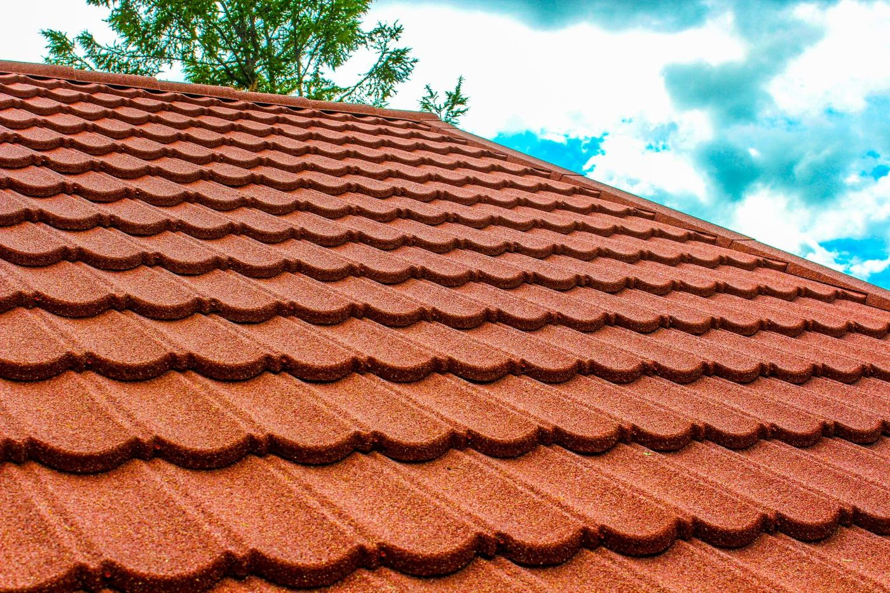
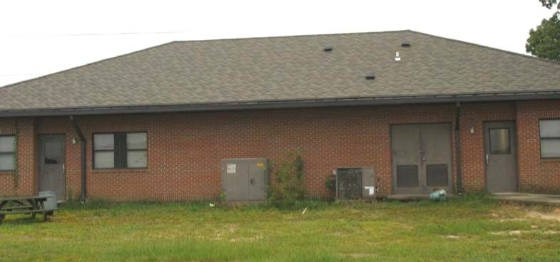

Home / Roofing
Stone-Coated Metal Roofing
A steel roof that looks like a shingle, shake, or tile roof — our specialty alongside asphalt replacement and repairs in Northern Indiana and Southern Michigan.
Stone-coated steel starts as structural sheet steel with an aluminum-zinc coating (the same family often sold as Galvalume). Manufacturers then add a primer, an acrylic base coat, ceramic-coated stone granules, and a clear glaze. The granules are what you see from the street. They give the roof its color and texture, which is why this is not a standing-seam roof and not an asphalt shingle.
We install products such as DECRA when they fit the house and the budget. DECRA is sold as DECRA by IKO Metals. IKO also makes premium laminated asphalt shingles — Dynasty and Nordic — which we treat accurately as asphalt options, not as metal. We are not the manufacturer, and we do not claim to be a certified or authorized installer for any brand. Product warranties come from the manufacturer and have limits; they are not warranties from Highland Construction unless we put workmanship terms in a contract.
Why homeowners look at it
-
Traditional look, steel core
Shingle, shake, and tile profiles without the weight of clay or concrete tile, and without the bare-metal look of standing seam.
-
Light on the structure
DECRA’s code evaluation report lists an installed weight of 1.3 pounds per square foot — about 130 pounds per roofing square.
-
Wind and hail terms, with limits
DECRA’s Lifetime Limited Warranty addresses blow-off in winds up to 120 mph and penetration by hailstones up to 2.5 inches, with exclusions and later-year proration. DECRA also reports a UL 2218 Class 4 impact rating. No roof is hail-proof.
-
A long published service life
Consumer cost guides often put typical life in the 40- to 70-year range, longer than a standard asphalt roof. That is an average, not a guarantee.
Profiles we discuss
Names below are DECRA’s. The minimum slopes come from ICC-ES evaluation report ESR-1754. Always follow the current guide for the exact product on a bid.
-
Shingle XD
A thick architectural-shingle look. Direct-to-deck installation.
-
Shake XD
A wood-shake appearance with more texture than a shingle profile. Direct-to-deck.
-
Villa Tile
A barrel-style, Old-World tile look, also installed direct to the deck.
-
Tile and Shake
Classic tile and shake profiles designed to be installed over battens rather than only to the deck. Battens add an air space and typically add labor and material.
Midwest winters
Our climate means freeze-thaw cycles, snow, ice at the eaves, and occasional hail. Stone-coated steel handles wet, cold weather well when it is flashed correctly and when ice-and-water shield is used where cold-climate practice calls for it. DECRA’s installation guidance says to use ice-and-water shield in cold climates.
It will not, by itself, stop ice dams. Ice dams form when heat escaping into the attic melts snow and the water refreezes at the cold eaves. Air sealing, insulation, and a cold roof deck do that work. A granulated metal surface is also not as slick as standing seam, so snow may sit longer than it would on a bare metal panel. We would rather say that plainly than oversell the material.
You can walk on these roofs with care: soft-soled shoes, stay off the side laps, and step where the manufacturer shows a walking zone. Rain noise is usually in the same range as asphalt when the deck, underlayment, and attic are ordinary; a house with little or no attic may still benefit from a heavier underlayment.
How it compares
Figures below are national published ranges from HomeGuide and manufacturer literature, checked in November 2026. They are not Highland prices. Cost varies with roof size, slope, complexity, tear-off, and deck repairs. Ask us for a free estimate on your house.
Each comparison is stacked below so you can read every option without scrolling sideways.
| Stone-coated steel | Standing-seam metal | Premium asphalt (such as IKO Dynasty or Nordic) | Standard asphalt | |
|---|---|---|---|---|
| What it is | Steel panels with a granular stone coating, formed as shingles, shakes, or tiles. Not asphalt, and not standing seam. | Smooth metal panels with raised vertical seams and a distinct metal look. | Laminated asphalt shingles. Dynasty is traditional asphalt (Class 3 impact). Nordic is polymer-modified asphalt (Class 4) and is sold only in select markets. Neither is stone-coated metal. | 3-tab or basic architectural asphalt shingles — the most common and typically the lowest first cost. |
| Typical installed cost (national) | About $7–$13 per sq ft (HomeGuide). Many DECRA-branded jobs listed around $8–$14 per sq ft. | About $9–$16 per sq ft (HomeGuide). Standing-seam steel often listed around $8–$13. | Falls in HomeGuide’s luxury / premium shingle range, about $5–$7 per sq ft, above ordinary architectural shingles. | About $3–$5 per sq ft overall; architectural / dimensional often about $4–$6 (HomeGuide). |
| Typical service life | Often published at 40–70 years (HomeGuide). Manufacturer warranties are limited “lifetime” terms, not a guaranteed year count. | Metal roofs in general are often listed at 30–80+ years, depending on the metal and coating (HomeGuide). | Luxury / premium shingles often listed around 25–40 years. IKO carries Limited Lifetime coverage for the original owner, with stated limits. | About 15–20 years for 3-tab; about 20–30 years for architectural shingles (HomeGuide). |
| Weight | About 1.3 psf for DECRA panels (ICC-ES ESR-1754). | Light; exact weight depends on metal and gauge. | Heavier than stone-coated steel; exact weight varies by product. | Typically heavier per square than stone-coated steel panels. |
| Wind (as published) | DECRA warranty language addresses blow-off in winds up to 120 mph, subject to the warranty terms. | Varies widely by panel, clip, and assembly. Check the system specified for the job. | IKO Dynasty and Nordic carry a 130 mph limited wind warranty, subject to IKO’s terms. | Lower on many 3-tab products; better on quality architectural shingles — check the specific line. |
| Hail / impact | DECRA reports UL 2218 Class 4 and warranty language on penetration by hail up to 2.5 inches, with exclusions for ordinary weathering and minor granule loss. | Depends on the panel. A steel roof resists puncture well but can dent; ratings are assembly-specific. | Nordic: Class 4. Dynasty: Class 3. IKO states these ratings are not a hail-performance guarantee and that hail damage is not covered under the IKO limited warranty. | Often unrated or a lower class unless you step up to an impact-resistant shingle. |
| Fire classification | Class A, B, or C depending on the listed underlayment or barrier-board assembly (ESR-1754). Not automatically Class A in every install. | Typically determined by the assembled system. | IKO lists Class A (ASTM E108 / UL 790) when shingles are installed over an approved underlayment. | Many fiberglass shingle assemblies are Class A with the proper underlayment; confirm the product. |
| Midwest snow and ice | Use ice-and-water shield in cold climates. Does not, by itself, prevent ice dams. Textured surface may hold snow longer than standing seam. | Often sheds snow more readily; snow guards may be needed over doors and walks. Ice dams still depend on attic heat loss. | Standard cold-climate practice: ice-and-water shield, ventilation, and insulation. Nordic is positioned by IKO for cold, hail-prone regions. | Same ice-dam physics. Aging shingles give meltwater more ways inside at the eaves. |
DECRA, Shingle XD, Shake XD, Villa Tile, and related marks are trademarks of their owners. IKO, Dynasty, Nordic, ArmourZone, FastLock, and Iron Clad are trademarks of IKO or its affiliates. Galvalume is a trademark of its owner. Highland Construction is not the manufacturer and does not claim to be a certified or authorized installer for any brand.
What this roof looks like
These photographs show stone-coated metal roofs. They are not Highland Construction projects.



Next step
Get a free estimate
Call Derek or David, or send a request on our quote form. We will look at the roof and talk through stone-coated metal, premium asphalt, and repairs as real options — without a hard sell.
Call Derek · 574.376.5786 Call David · 231.384.0240 Request a quote
Financing available
You can check financing options for a roofing project through Acorn Finance, which offers loan offers from a network of lenders. Checking offers does not impact your credit score. Offers are provided by Acorn Finance’s lending partners and are subject to credit approval.